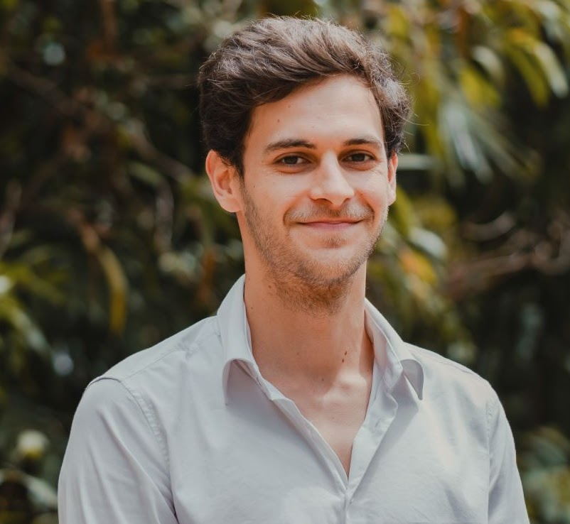
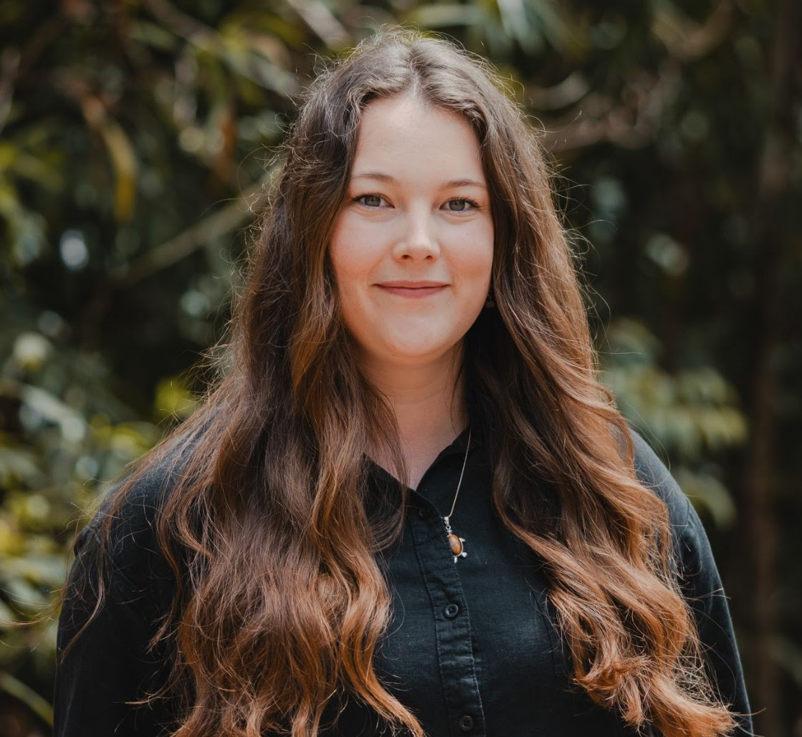
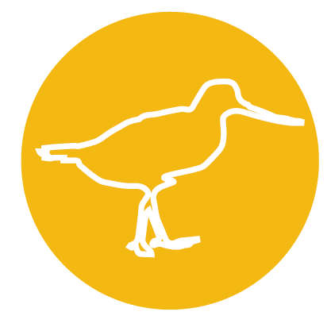

// Team
EcoViewer is developed by a small team of researchers and engineers, with support from the Global Ecology Lab at James Cook University, Australia.
// Core Team
The core team behind the EcoViewer platform — responsible for the application architecture, data pipelines, Earth Engine integration, and ecological methodology.

Research Software Engineer
Contributed to EcoViewer through software engineering, data infrastructure, and the development of this website.
Biodiversity Data Scientist
Contributed to EcoViewer with a focus on biodiversity data, building the GBIF pipeline and supporting the project's data infrastructure.

Remote Sensing Ecologist
Contributed to EcoViewer with deep Earth Engine expertise, shaping the platform's overall architecture and remote sensing workflows.
Remote Sensing Ecologist
Contributed to EcoViewer's development with remote sensing expertise, shaping the environmental layers and the ecosystem indicator species methodology.
// With support from
EcoViewer was developed within the Global Ecology Lab at James Cook University, Townsville, Australia. The lab develops and applies cutting-edge analytical techniques to environmental data to advance conservation of at-risk species and ecosystems worldwide.
We are grateful to the entire Global Ecology Lab team for their help and support throughout the development of EcoViewer. Special thanks to Professor Nicholas Murray, Dr Tom Lloyd, and Dr Alys Young for their guidance, expertise, and continued encouragement.
Visit the Global Ecology Lab →
Global Ecology Lab
James Cook University · Townsville, Australia
Led by Professor Nicholas Murray, the Global Ecology Lab is based in the College of Science and Engineering at JCU. The lab works at the interface of ecology, technology, and conservation biology, with ongoing research focused on ecosystem dynamics and species conservation worldwide.
// Acknowledgements
EcoViewer has benefited from the advice and expertise of researchers and scientists who generously shared their knowledge throughout the development of the project.
David Keith
University of New South Wales
José R. Ferrer Paris
University of New South Wales
Jasurbek Abduqodirovich
Academy of Sciences of the Republic of Uzbekistan
Anisha Dayaram
South African National Biodiversity Institute